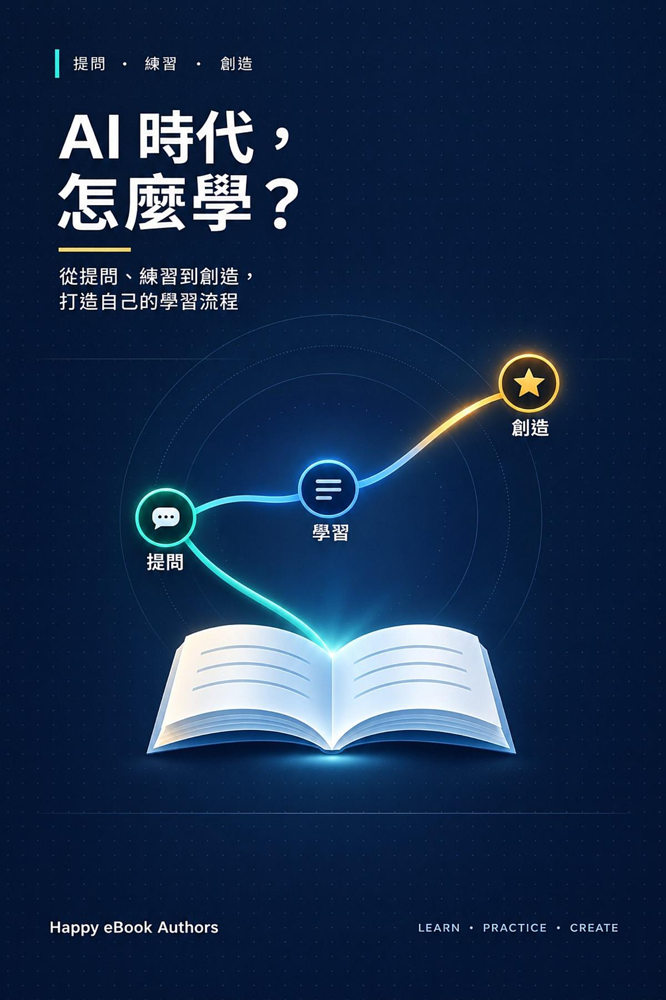

電子書
AI 時代，怎麼學？
從提問、練習到創造，打造自己的學習流程

AI 時代，怎麼學？
從提問、練習到創造，打造自己的學習流程
AI 工具讓提問、查找與生成變得容易，但真正學會仍要靠自己理解、練習、查核與應用。本書以在職知識工作者與職涯轉換者為對象，帶你建立一套可持續更新的學習流程：從選擇值得投入的能力、盤點起點與設定成果標準，到拆解學習路徑、設計練習、運用 AI 提示與回饋，再以主動回想、查核和新情境測試確認是否真正學會。書中提供案例、操作步驟、流程圖與工作表，協助你把學到的知識轉化為可檢視的工作成果，並根據證據規劃下一輪學習。
這本書適合誰？
這本書寫給在職知識工作者與職涯轉換者。當 AI 讓查找與生成變得很容易，「學會」反而更難判斷；本書提供的是一套可以反覆使用的學習流程，而不是一份工具清單。
你會學到什麼
- 先判斷哪些能力值得投入，盤點起點並設定可檢視的成果標準。
- 把大目標拆成練習路徑，設計能看出理解程度的任務，而不是只看過影片。
- 用 AI 提示與回饋加速草稿，再用主動回想與新情境測試確認是否真的學會。
- 把學習成果轉成工作產出，並根據證據規劃下一輪，而不是憑感覺前進。
怎麼搭配本站內容
本站的〈AI 出版一本書需要哪些步驟？〉同樣談「從選題到可交付成果」的流程思維，可與這本一起讀，形成學與做的對照。
In English: A sustainable learning workflow for the AI era: choosing capabilities, setting evidence-based goals, designing practice, using AI feedback, and verifying understanding through recall and new situations. An original reading guide by Happy eBook.